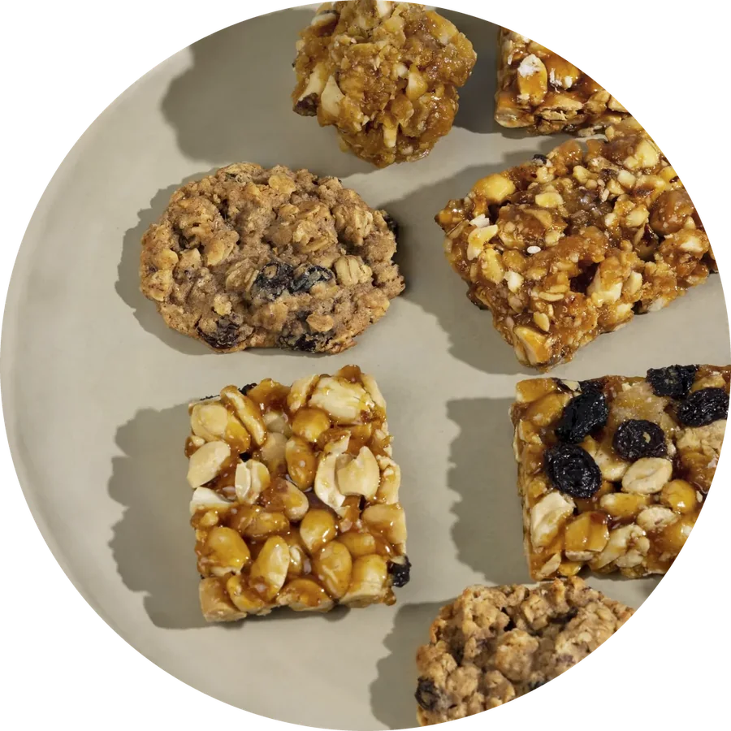

НАША ПРОДУКЦИЯ
Основой служат растительные матрицы: пророщенные злаки, бобовые,
семена и овощи. В процессе ферментации пробиотические культуры
(Lactobacillus plantarum, Bifidobacterium bifidum и другие) не только
разрыхляют и размягчают сырьё, но и обогащают продукт органическими
кислотами, витаминами группы В и ферментами, которые улучшают
усвоение питательных веществ.
После ферментации снеки высушиваются при щадящих температурах, что
позволяет сохранить жизнеспособность пробиотиков. Исследования
показывают, что при использовании специальных методов защиты
(микрокапсулирование, внесение в низководную матрицу) пробиотики
сохраняют титр в течение нескольких месяцев хранения даже при
комнатной температуре


В состав входят живые пробиотические бактерии, специально
подобранные для выживания в сухих снеках. Исследования
показывают, что наиболее перспективными для таких продуктов
являются штаммы Lactobacillus plantarum, Lactobacillus
acidophilus, Bifidobacterium spp. и Bacillus coagulans.
Количество живых культур в готовом продукте — не менее 1
миллиарда КОЕ на порцию (45 г), что соответствует рекомендациям
для функциональных продуктов с пробиотическими свойствами.
Для сравнения: коммерческие пробиотические батончики,
представленные на рынке, обычно содержат Bacillus coagulans GBI-30
6086 в количестве, достаточном для поддержки пищеварения